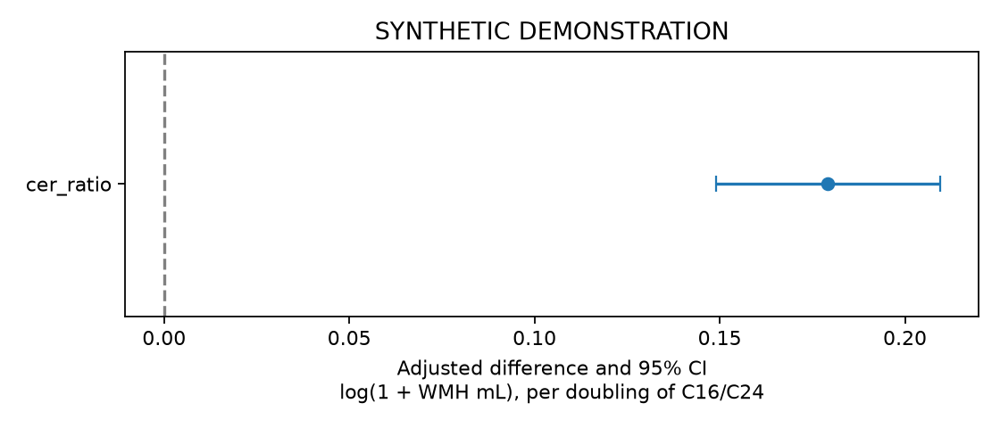

SYNTHETIC DEMONSTRATION — NOT PATIENT RESULTS
五项独立队列；不要求Hcy。患者行和ID仅保存在本地分析目录，不进入本报告。
| step | remaining | excluded_here |
|---|---|---|
| clinical_image_union | 2400 | 0 |
| adult_ischemic_stroke | 2400 | 0 |
| available_true_icv | 2400 | 0 |
| available_wmh_ml | 2400 | 0 |
| available_lesion_ml | 2400 | 0 |
| observed_positive_cer16_and_cer24 | 2281 | 119 |
| known_baseline_sample_time | 2281 | 0 |
| analysis | study | tier | family | status | n | outcome_unknown | parameters | imputations | p | statistic | df1 | df2 | method | m | primary_terms | estimate | lower | upper | r | ratio | ratio_lower | ratio_upper | p_bh_secondary |
|---|---|---|---|---|---|---|---|---|---|---|---|---|---|---|---|---|---|---|---|---|---|---|---|
| primary | ceramide | primary | ols | ESTIMATED | 2281 | 0 | 26 | 2 | 3.864e-31 | 134.7 | 1 | 1.107e+09 | Rubin scalar Wald | 2 | cer_ratio | 0.1792 | 0.1489 | 0.2094 | NaN | NaN | NaN | NaN | NaN |
| complete_case | ceramide | sensitivity | ols | ESTIMATED | 1994 | 0 | 26 | 1 | 2.23e-28 | 122.1 | 1 | inf | Rubin scalar Wald | 1 | cer_ratio | 0.1814 | 0.1492 | 0.2135 | NaN | NaN | NaN | NaN | NaN |
| alternative_ratio | ceramide | secondary | ols | ESTIMATED | 2281 | 0 | 26 | 2 | 3.015e-35 | 153.5 | 1 | 1.395e+12 | Rubin scalar Wald | 2 | cer_alt | 0.2418 | 0.2036 | 0.2801 | NaN | NaN | NaN | NaN | 1.809e-34 |
| gray_matter | ceramide | secondary | ols | ESTIMATED | 2281 | 0 | 26 | 2 | 0.4071 | 0.6871 | 1 | 4.506e+08 | Rubin scalar Wald | 2 | cer_ratio | -0.8578 | -2.886 | 1.17 | NaN | NaN | NaN | NaN | 0.7475 |
| acute_lesion | ceramide | secondary | ols | ESTIMATED | 2281 | 0 | 25 | 2 | 0.9466 | 0.00448 | 1 | 8.003e+09 | Rubin scalar Wald | 2 | cer_ratio | -0.001149 | -0.03479 | 0.03249 | NaN | NaN | NaN | NaN | 0.9466 |
| separate_components | ceramide | secondary | ols | ESTIMATED | 2281 | 0 | 27 | 2 | 2.286e-30 | 68.25 | 2 | 4.461e+08 | D1 pooled multivariate Wald | 2 | log_c16;log_c24 | NaN | NaN | NaN | 5.799e-05 | NaN | NaN | NaN | 6.858e-30 |
| function60 | ceramide | secondary | multinomial | ESTIMATED | 2120 | 0 | 72 | 2 | 0.6464 | 0.2105 | 1 | 8.348e+04 | Rubin scalar Wald | 2 | dependent:cer_ratio | 0.03374 | -0.1104 | 0.1779 | NaN | 1.034 | 0.8955 | 1.195 | 0.7757 |
| function60_with_wmh | ceramide | secondary | multinomial | ESTIMATED | 2120 | 0 | 74 | 2 | 0.4984 | 0.4584 | 1 | 9.306e+07 | Rubin scalar Wald | 2 | dependent:cer_ratio | -0.05152 | -0.2007 | 0.09762 | NaN | 0.9498 | 0.8182 | 1.103 | 0.7475 |
| function60_observation_weighted | ceramide | sensitivity | multinomial | ESTIMATED | 2120 | 161 | 72 | 2 | 0.6463 | 0.2105 | 1 | 3.17e+06 | Rubin scalar Wald | 2 | dependent:cer_ratio | 0.03398 | -0.1112 | 0.1791 | NaN | 1.035 | 0.8948 | 1.196 | NaN |
多分类系数取指数表示 P(该状态)/P(独立) 的比值之比，不能标为HR。联合检验显著不代表每个系数都显著。

| estimate | se | lower | upper | p | df | m | within_variance | between_variance | term | scale |
|---|---|---|---|---|---|---|---|---|---|---|
| 2.422 | 0.04995 | 2.325 | 2.52 | 0 | 1.804e+05 | 2 | 0.00249 | 3.916e-06 | intercept | difference |
| 0.1792 | 0.01544 | 0.1489 | 0.2094 | 3.864e-31 | 1.107e+09 | 2 | 0.0002383 | 4.774e-09 | cer_ratio | difference |
| 0.1485 | 0.02407 | 0.1013 | 0.1957 | 6.814e-10 | 1.958e+08 | 2 | 0.0005793 | 2.76e-08 | age | difference |
| 0.0542 | 0.02876 | -0.002171 | 0.1106 | 0.0595 | 3.081e+09 | 2 | 0.0008273 | 9.936e-09 | age_rcs | difference |
| -0.01538 | 0.0229 | -0.06027 | 0.02951 | 0.5018 | 6.131e+07 | 2 | 0.0005244 | 4.466e-08 | sex_2 | difference |
| 0.009092 | 0.03176 | -0.05315 | 0.07134 | 0.7746 | 1.948e+09 | 2 | 0.001009 | 1.524e-08 | smoking_2 | difference |
| 0.004717 | 0.03148 | -0.05698 | 0.06642 | 0.8809 | 6.867e+08 | 2 | 0.000991 | 2.521e-08 | smoking_3 | difference |
| 0.0009867 | 0.03188 | -0.0615 | 0.06347 | 0.9753 | 7.283e+07 | 2 | 0.001016 | 7.94e-08 | smoking_4 | difference |
| 0.016 | 0.03304 | -0.04876 | 0.08076 | 0.6282 | 1.569e+07 | 2 | 0.001091 | 1.838e-07 | drinking_2 | difference |
| 0.03727 | 0.03215 | -0.02574 | 0.1003 | 0.2464 | 3.756e+10 | 2 | 0.001034 | 3.556e-09 | drinking_3 | difference |
| 0.05549 | 0.03176 | -0.006759 | 0.1177 | 0.08061 | 1.405e+08 | 2 | 0.001009 | 5.673e-08 | drinking_4 | difference |
| 0.004009 | 0.0232 | -0.04152 | 0.04954 | 0.8628 | 902.8 | 2 | 0.0005203 | 1.194e-05 | hypertension_2 | difference |
| 0.02372 | 0.02288 | -0.02113 | 0.06857 | 0.2999 | 1.777e+11 | 2 | 0.0005235 | 8.28e-10 | diabetes_2 | difference |
| -0.01851 | 0.02286 | -0.06332 | 0.0263 | 0.4181 | 4.086e+10 | 2 | 0.0005227 | 1.724e-09 | prior_stroke_2 | difference |
| 0.003927 | 0.00389 | -0.003698 | 0.01155 | 0.3128 | 2.733e+05 | 2 | 1.511e-05 | 1.93e-08 | bmi | difference |
| -0.01695 | 0.03686 | -0.08919 | 0.0553 | 0.6456 | 1.802e+04 | 2 | 0.001348 | 6.748e-06 | education_2 | difference |
| 0.03695 | 0.0368 | -0.03521 | 0.1091 | 0.3155 | 2468 | 2 | 0.001327 | 1.817e-05 | education_3 | difference |
| 0.03731 | 0.03798 | -0.03715 | 0.1118 | 0.326 | 5359 | 2 | 0.001423 | 1.314e-05 | education_4 | difference |
| 0.005527 | 0.03685 | -0.0667 | 0.07775 | 0.8808 | 5.281e+04 | 2 | 0.001352 | 3.939e-06 | education_5 | difference |
| -0.0321 | 0.04004 | -0.1106 | 0.04639 | 0.4228 | 1.572e+04 | 2 | 0.001591 | 8.527e-06 | cysc | difference |
| -0.01603 | 0.01975 | -0.05473 | 0.02267 | 0.4168 | 3.113e+07 | 2 | 0.0003898 | 4.659e-08 | ldl | difference |
| 0.02384 | 0.01992 | -0.0152 | 0.06288 | 0.2314 | 7975 | 2 | 0.0003922 | 2.961e-06 | tg | difference |
| -0.002327 | 0.02459 | -0.05053 | 0.04587 | 0.9246 | 2.935e+07 | 2 | 0.0006047 | 7.443e-08 | prior_statin_1 | difference |
| 0.005559 | 0.00575 | -0.005711 | 0.01683 | 0.3337 | 2.814e+09 | 2 | 3.306e-05 | 4.155e-10 | sample_day | difference |
| -0.03989 | 0.01911 | -0.07735 | -0.002433 | 0.03687 | 3.15e+08 | 2 | 0.0003653 | 1.372e-08 | lesion_ml | difference |
| 0.001102 | 0.01285 | -0.02408 | 0.02628 | 0.9317 | 1.673e+08 | 2 | 0.0001651 | 8.509e-09 | icv_ml | difference |
完成模型 2；参数数 26；最大设计条件数 4.3。完整诊断见 fit_diagnostics.json。
缺失处理依赖MAR假设。功能状态图为固定访视结局的标准化概率，不是首次失能的累积发生率。血压分析是实测血压的条件关联。次要分析报告研究内BH-FDR；总汇报另列固定五项Holm校正。